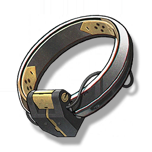

Basic Ring
Development Materials

Used for weapon breakthrough, Resonator ascension, and skill upgrade.
A barely passable ring, used for identity recognition among comrades, and also for simple communication, positioning, and perception, facilitating their survival in the wilderness away from the city.